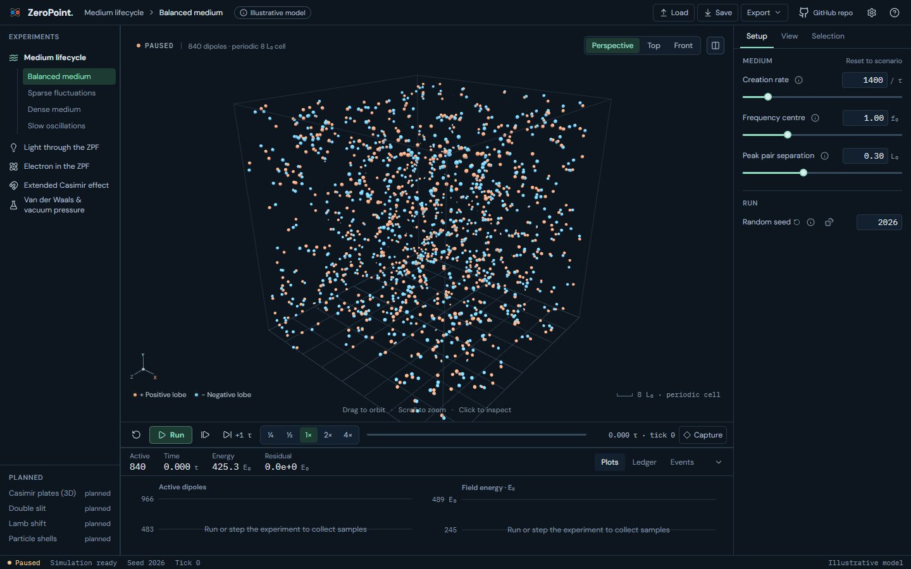
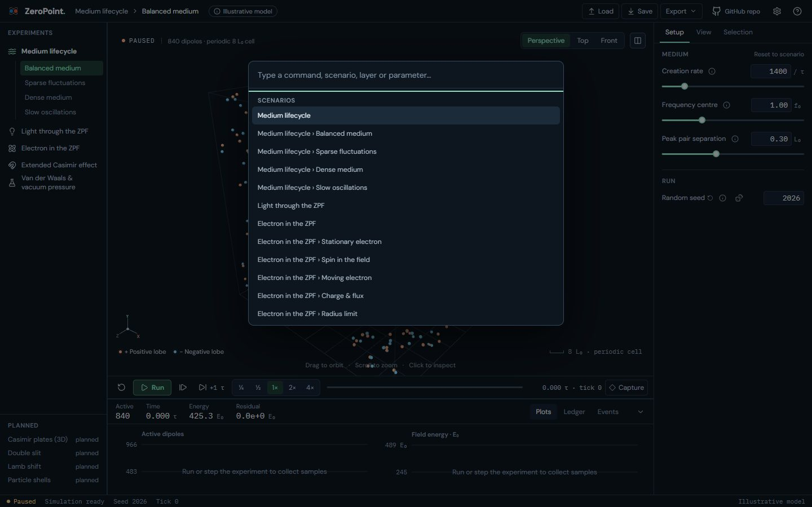
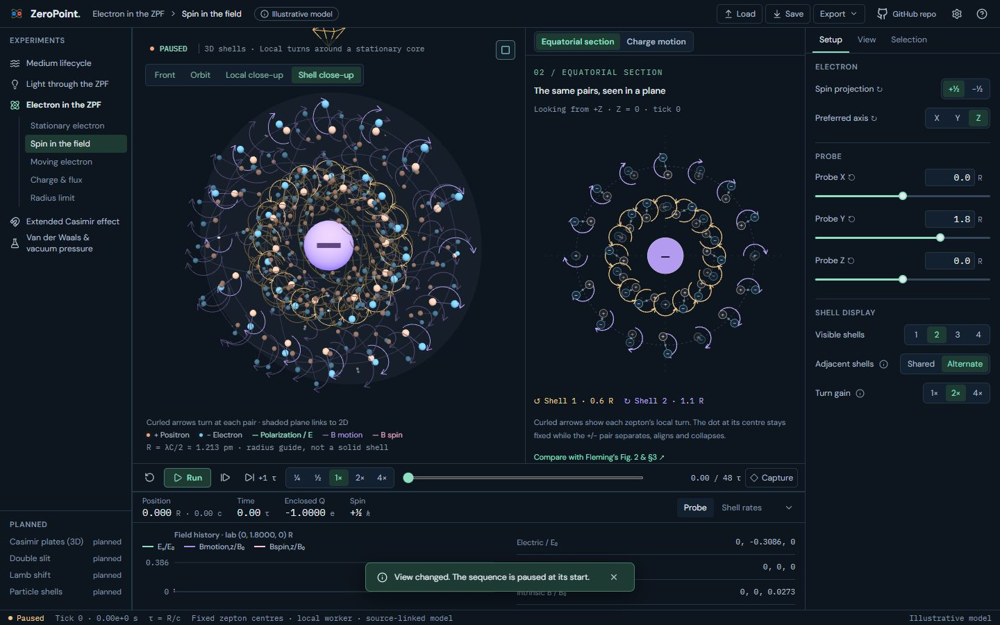
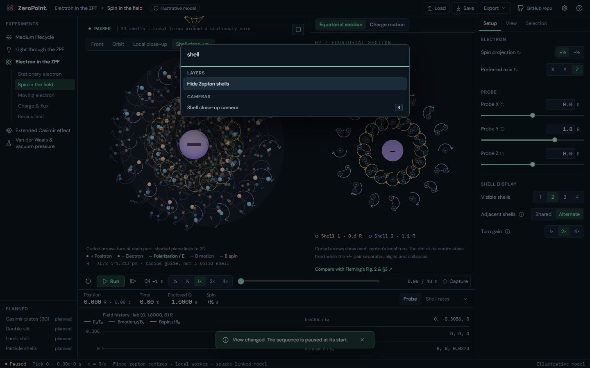

UI 15b · Command palette: before and after
Ctrl K (⌘ K) opens the command palette over any lab. It searches every experiment and scenario (choosing one switches there), plus the visible lab's actions from the registry: transport, cameras, layers by name (Show or Hide Faraday lines), parameter jumps (typing frequency focuses its value field in Setup), selection (Select first active dipole, Select nearest to probe, Inspect newest Zepton), Save, Load and each Export, the panels and focus mode, and Help. Every typed word must appear in an entry's name or group. Each entry shows its shortcut on the right. Keys that a component handles itself (the panels, split, selection, Help) run from the palette by pressing that key. The palette closes on Esc or Ctrl K.
Real screens: "before" runs the layer below, and "after" runs this layer. Click an image to open it at full size. Regenerate with node scripts/compare-screens.mjs --before ../15a-actions --out docs/ui-previews/15b-palette --set palette --title 'UI 15b · Command palette' --description 'Ctrl K (⌘ K) opens the command palette over any lab. It searches every experiment and scenario (choosing one switches there), plus the visible lab'\''s actions from the registry: transport, cameras, layers by name (Show or Hide Faraday lines), parameter jumps (typing frequency focuses its value field in Setup), selection (Select first active dipole, Select nearest to probe, Inspect newest Zepton), Save, Load and each Export, the panels and focus mode, and Help. Every typed word must appear in an entry'\''s name or group. Each entry shows its shortcut on the right. Keys that a component handles itself (the panels, split, selection, Help) run from the palette by pressing that key. The palette closes on Esc or Ctrl K.'.
Medium · Ctrl K: every scenario and the lab’s actions, each with its shortcut




Electron · Spin: Ctrl K, searching “shell”



